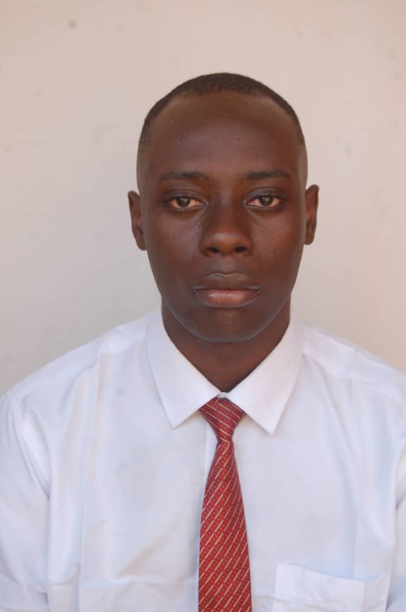

Collins Ewezuga Obasi

Missionary • Entrepreneur • Game Developer • Tech Visionary
“My mission is to build an empire of purpose, create jobs through creativity, and bless lives through tech, faith, and unstoppable innovation.”
About Me
I’m a purpose-driven creator from Enugu, Nigeria. With a deep love for Christ and a burning passion for innovation, I’ve walked a path through entrepreneurship, self-taught game development, and visionary tech projects like Cowry League. I’m currently preparing to serve a full-time mission with the LDS Church starting May 29th. My mission is to uplift lives through faith, creativity, and technology.
Mission Call
Called to serve a full-time mission for The Church of Jesus Christ of Latter-day Saints, beginning May 29th, 2025.
Projects & Experience
- Founder of Cowry League – A competitive cash-reward game platform
- Founder of Moorbox – African high-budget movie production & innovation
- Founder of African Game Studios & African Game Awards
- CEO of Moorzeex Motors – A futuristic luxury automotive brand
- CEO of CLSI (Collins Security Intelligence) – Tech-driven security and AI
- Founder of CL Infratech – AI-powered infrastructure company
- Self-taught game developer – focused on mobile-first African experiences
- Experience in dropshipping, social media marketing, and brand building
- Started and led several entrepreneurial ventures for learning and growth
Education
- Computer Science Education – Enugu State University (Graduated 2024)
- WAEC – OLSIS, 2016
- Completed LDS Seminary and Missionary Preparation Classes
Church Leadership Callings
- Served as Priests Quorum President
- Served as Teachers Quorum First Counselor
- Served as Deacons Quorum President
- Served as Ward Librarian
Key Skills & Traits
- Visionary and purpose-driven
- Resilient and self-motivated
- Faithful and spiritually focused
- Strong communication and teaching
- Creative and entrepreneurial
- Adaptable and humble
- Service-minded and tech-passionate